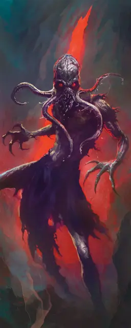

Вампир свежеватель разума
Vampire Mind Flayer
Средняя Нежить, Хаотичная Злая

Класс Защиты 15 Инициатива +4 (14)
Хиты 85 (10к8 + 40)
Скорость 30 футов, Лазания 30 футов
| мод | спас | ||
|---|---|---|---|
| СИЛ | 18 | +4 | +4 |
| ЛОВ | 18 | +4 | +7 |
| ТЕЛ | 18 | +4 | +4 |
| мод | спас | ||
|---|---|---|---|
| ИНТ | 5 | −3 | −3 |
| МДР | 15 | +2 | +5 |
| ХАР | 18 | +4 | +7 |
Сопротивление урону Некротический, Психический
Иммунитеты Яд; Испуганный, Истощение, Отравленный, Очарованный
Чувства Тёмное зрение 120 футов, пассивное Восприятие 15
Языки Глубинная речь (понимает, но не говорит)
Опасность 5 (1 800 опыта; БВ +3)
Особенности
Паучье лазание. Вампир может лазать по сложным поверхностям, включая потолки, без совершения проверок характеристик.
Гиперчувствительность к солнцу. Вампир получает 20 урона Излучением, если начинает свой ход на солнечном свету. Пока вампир на солнечном свету, он получает Помеху к броскам атаки и проверкам характеристик.
Действия
Мультиатака. Вампир совершает две атаки Когтями — либо одну атаку Когтями и одну атаку Щупальцами — и использует Подрыв сознания, если тот доступен.
Когти. Бросок рукопашной атаки: +7, досягаемость 5 фт. Попадание: 8 (1к8 + 4) Рубящего урона плюс 10 (3к6) Некротического урона.
Щупальца. Бросок рукопашной атаки: +7, досягаемость 5 фт. Попадание: 11 (2к6 + 4) Колющего урона. Если цель — существо Среднего размера или меньше, она Схвачена (Сл освобождения от захвата 14) всеми щупальцами.
Испитие разума. Спасбросок Мудрости: Сл 15, одно Схваченное вампиром существо. Провал: 21 (6к6) Психического урона, и цель получает 1 уровень Истощения. Максимум Хитов цели снижается на число, равное полученному Психическому урону, а вампир восстанавливает то же количество Хитов.
Подрыв сознания (Перезарядка 5–6). Спасбросок Интеллекта: Сл 15, все существа в 30-футовой Эманации, исходящей от вампира. Провал: Цель Недееспособна и повторяет спасбросок в конце каждого своего хода, оканчивая этот эффект при успехе. Спустя 1 минуту она преуспевает автоматически.
Бонус мастерства +3
Среда обитания Город, Подземье
Сокровища Любые
Вампиры
Пьющие кровь владыки ночи
Вампиры скрывают свою проклятую бессмертную природу и выдают себя за живых, чтобы питаться их кровью. Самые младшие и кровожадные из них часто попадают в рабство к своим создателям, а невероятно хитрые и древние вампиры веками наслаждаются сверхъестественной властью над силами ночи.
Днём бессмертные создания скрываются в своих местах отдыха, недоступные для врагов и палящих солнечных лучей. Совершите бросок по таблице «Место отдыха вампира» для вдохновения или выберите сами мрачное место упокоения вампира.
Место отдыха вампира
| 1к6 | Место отдыха вампира находится… |
| 1 | Среди корней мёртвого дерева. |
| 2 | На дне затхлого пруда. |
| 3 | В гробу, наполненном могильной землёй. |
| 4 | В огромном сосуде с кровью или уксусом. |
| 5 | В недоступном для Гуманоидов пространстве. |
| 6 | Внутри скульптуры или комплекта доспехов. |
Вампиры свежеватели разума происходят из чуждого домена Блютспур. Чтобы найти лекарство для своего деградирующего старшего мозга, иллитиды того мира пошли на радикальные эксперименты. Итогом их трудов стали головастики, заражённые вампиризмом. Эти кошмары развились во взрослых свежевателей разума, способных извлекать психическое пропитание из чужих разумов. Насытившись псионической энергией, вампиры свежеватели возвращаются в Блютспур, где старший мозг вновь поглощает их — смесь гормонального супа и похищенной психической эссенции.
Вампиры свежеватели разума — звероподобные создания, почти не контролирующие свои психические силы. Вместо сфокусированных пси-взрывов они испускают волны головокружительных, разрывающих разум ощущений. Своими же зазубренными щупальцами они вытягивают ментальную энергию из жертв.
Обычные свежеватели разума относятся к сородичам-вампирам с отвращением, считая их чудовищной мерзостью. Тем не менее они порой пускают в ход своих извращённых собратьев в отчаянных случаях — например, чтобы сохранить старший мозг Блютспура.